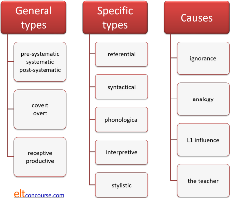
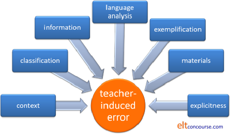

Teacher-induced error
Learners of English have more than enough problems to contend
with without their teachers (and the materials their teachers use)
making things worse.
A major source of error is, unfortunately, teachers and materials.
The following sets out to describe the sources of this sort of error
and suggest some ways of eradicating them or at least reducing their
impact.
 |
Types and sources of error |
There are a number of overlapping and linked sources of error
that may be caused either by the teacher's behaviour or encouraged by the
teacher's materials. We'll identify and describe the main
ones, describe their impact and suggest ways they might be avoided,
if only partially.
If you have recently followed the
guide to error or are confident that you understand all of its
content, you can safely skip to the next section.
4 overarching categories of error |
- Learning stage
- pre-systematic: the learner has not encountered the item or structure and is guessing wrongly (probably by assuming it is analogous to something already learned or to how it works in the learner's first language)
- systematic: the learners are currently acquiring the item and not getting it right all the time (a bit more practice is called for)
- post-systematic: the learner has acquired the item but occasionally slips and makes an error (probably caused by inattention, cognitive overload or tiredness)
- Obviousness
- covert: it is not immediately apparent whether what is said is actually wrong without supplying more context or questioning the learner concerning his/her intended meaning
- overt: the error is clearly apparent
- Input / output
- receptive: the learner has misunderstood what she/he has read or heard
- productive: the error occurs in writing or speaking
- Who makes the error?
- individual: only one or two learners are affected
- group: the whole class are making the error
5 specific types of error |
- Referential or lexical: the learner has selected the wrong
word or the wrong word grammar
*He put a new sheet of glass in the window
*She let them to go - Syntactical, textual, structural or grammatical: the learner
has produced a formally wrong piece of language
*I would go if she would invite me
*She was late nevertheless didn't miss her train - Phonological: the learner has mispronounced a phoneme,
placed the stress incorrectly or used inappropriate intonation
He called a cap to take him to the station
What time does the meeting start?↑ - Interpretive: the learner has got 'the wrong end of the
stick' and misunderstood something
How long are you staying?
*I have been here since Thursday - Stylistic, pragmatic or social: the learner has adopted an
inappropriate style or failed to produce language appropriate to
the register
*Good afternoon, waitress
*We walked across the golf ground
4 essential sources of error: |
- Ignorance: the learner simply does not know the item or structure and is guessing
- Analogy, overgeneralisation or ignorance of rule restriction: the learner is applying a rule beyond its setting or assuming that what works for one item will work for another similar one
- First language(s) interference: the learner has been influenced by the lexis or structure in the first language and assumed (or guessed or hoped) that it will be parallelled in English
- The teacher's behaviour, materials or inattention. This is the topic of this guide.
Here's a summary of all that should you want to keep it by your side when considering what follows.

 |
The teacher's contribution to error making and error persistence |
Here we will look at some simple classroom scenarios (most of
them recorded in people's classrooms) and try to figure out what the
role of the teacher was in producing the error. More
importantly, we'll consider what should have happened.
Consider the little scene on the left and:
- Figure out what went wrong
- Suggest how it could be avoided
Then click on the
 to reveal some suggestions.
to reveal some suggestions.
| Event: Learner: What means 'conceal'? Teacher: The same as 'hide'. |
Outcome: Learner: She concealed behind the curtain (A referential and syntactical error) |
The problem here is twofold:
Firstly, the teacher has ignored a malformed question from a learner obviously able to ask it correctly. That can lead to fossilization of the error. Secondly, the teacher did not supply the word grammar and used a sloppy approach to synonymy. With no co-text for the learner to work with, error is inevitable. The verbs are very similar in meaning but hide can be both intransitive and transitive whereas conceal is always transitive. The issue is one of colligation, specifically transitivity and, because languages work so differently, it is essential that learners who encounter a new verb are told explicitly whether it takes, or can take, no, one or two objects. This is what should have happened: Learner: What means 'conceal' Teacher: What ...? Learner: Sorry. What does 'conceal' mean? Teacher: The meaning is close to 'hide' but the grammar is a little different. You can hide something or you can just hide so nobody can see you but you must always have an object with 'conceal'. You can't say 'he concealed' because I must know what he concealed. The word 'conceal' is also a bit more formal. Can I say, "He concealed the book in the kitchen"? Learner: Yes. Teacher: Can I say, "He concealed in the kitchen"? Learner: No, I must say what he concealed. Teacher: Right, good. Make a note and let's move on. The other issue is whether all the learners needed to be aware of this information. In the event, they didn't because it was an individual, not a group, issue. |
| Event: Learner: Can I say 'crony' instead of 'friend'? Teacher: Yes, but it's very informal, almost slang. |
Outcome the next day: Where did you go yesterday? I met some cronies in the pub. (A referential and stylistic error) |
The teacher was right, of course, to draw the learner's
attention to issues of style but ignored the key issue
of connotation. The word, in fact, means not just
a friend but a long-standing friend and that might have
been helpful information.
The word crony is almost always used in a negative sense as in, e.g., The Prime Minister has promoted all her cronies rather than looking for the best people. My husband plays golf every Sunday with his horrible cronies. etc. The teacher needed to provide a context or two in which the word is used. Without context, it's not possible for the learner to acquire an adequate knowledge of the term and the error is the inevitable result. |
| Event: Learner: Never I have seen such a big dog Teacher: If you start a sentence with a word like 'Never', you need to say 'have I seen' not 'I have seen'. We invert (change around) the subject and the verb. |
Outcome: Learner 1: Never go I to the cinema Learner 2: Always have I gone with my brother (Both syntactical errors) |
The problem, again, comes down to the quality of
information. Nothing the teacher said is actually
wrong, but the data are incomplete and consequently
confusing, leading to inevitable error.
This is what should have happened: Teacher: No, that's wrong. If we use a negative adverb like 'never', to start a sentence, we are making it more important. The grammar changes because we make what looks like a question form following the adverb. For example (on the board): Never do I see him alone Barely have I been able to finish At no time can you ask to leave early Can you see what's happening? Mary? Mary: We make the question. Teacher: Yes. But we only do this with words that are negative. Do I say (writes on board), "Rarely do I see him alone" or "Rarely, I see him alone?" Class: The first one. Teacher: Why? (wait 10 seconds) John? John: Because 'rarely' is negative? Teacher: Yes, it means NOT often, doesn't it? Do I say, "Frequently am I there early" or "Frequently, I am there early"? Class: "Frequently, I am there early." Teacher: Why is that? Mary? Mary: Because 'frequently' is positive? Teacher: Yes, it means often doesn't it? Now, what's the difference in meaning between "I see him rarely" and "Rarely do I see him?" Learner: It's stronger. Teacher: What is stronger? Learner: The word 'rarely'. Teacher: Good, now we can do some practice of this. |
| Event: Learner: I put on my clothes (pronounced as /kləʊðɪz/) Teacher: No, that's pronounced as /kləʊðz/. Repeat. Learner /kləʊðɪz/ er /kləʊðz/ etc. |
Outcome: The learner may, eventually, be able to pronounce the word correctly. (Or continue, more probably, to make the phonological error) |
The issue here is the teacher's reliance on modelling
and drilling alone to correct pronunciation.
Providing practice is not the same as teaching.
What needed to happen was a focus on what your tongue is doing when you say the word clothes and a separate focus on the lack of a vowel between the /ð/ and the /z/ sounds. Back-chaining the sounds would have helped but so would a focus on tongue position and voicing. The other issue is that it's probably all unnecessary, especially at low levels because if one says /kləʊz/ instead of /kləʊðz/, almost no-one would notice. The teacher is, in fact, over informing and under informing at the same time. Both lead to error. |
| Teacher: Here are
the ways we looked at to introduce an opinion. In
pairs, use the topics on the list and exchange opinions
using three of them. Items are: In my experience… As far as I'm concerned… Speaking for myself… Personally, I think… I'd suggest that… I'd like to point out that… I believe that… Topics are: Food you love / hate Possibilities of colonies on Mars The best cities you know Holidays you like / don't like |
Outcome: Learners produced: I'd like to point out at that Prague is my favourite city I'd suggest that I don't like beach holidays Speaking for myself, we will soon have a colony on Mars I believe that I don't like very sweet things |
There's little obviously wrong with the procedure to
give the learners some semi-controlled practice of the
ways they can introduce their opinions in English.
What was lacking was the teacher's focus on language
analysis.
The problem arose because the teacher's materials don't take into account different sorts of opinion: personal likes etc., value judgements, views about the truth etc. This is a result of taking a website-inspired, phrase-book approach to teaching functions rather than taking a long look at the nature of the function of expressing opinion (or ability, obligation, permission etc.) and making sure that the exponents you want people to use match the function you want them to perform. The mismatch between the type of opinion that is being asked for and the exponents the learners are being asked to use is one that has its roots in a lack of analysis and the poor materials design which stems from that. |
| Student: In the
cupboard there isn't any sugar Teacher: That doesn't sound very English. We would say, There's no sugar in the cupboard. OK? |
Outcome: Learners produced: In my school there's 200 students At my house there's a place to park In the town centre is a church (While these are not clear syntactical errors, they are unnatural because of the learners' avoidance of form and lack of awareness of phrase ordering.) |
The issue here is that the teacher has provided almost
no usable information apart from the fact that something
doesn't 'sound very English'. That's often a cover
for, "I don't know what's gone wrong."
In fact, the learner has avoided the use of the existential there which is a very common phenomenon in English but variously so in other languages which might prefer the simpler forms and may also use have or exist as the existential verb (as in The house has a wall at the front / It exists a wall in front of the house rather than There's a wall in front of the house). There are probably two reasons, neither very admirable: a) the teacher is unaware of the frequency of use of the existential there in English and/or b) the teacher doesn't know how his/her learners' first language(s) operate(s). The second issue is one of fronting a prepositional clause. This is perfectly acceptable grammatically but usually done for special effect so that the key new information can be placed at the end of the utterance (the phenomenon of end focus). All this needed explaining and practising. The first option would be to get the learners to translate into their first language(s) to see how prepositional phrase positioning differs and to raise their awareness of the lack of the existential there structure in their language(s). Then they would be in a position to notice the data and notice the gap between the model and what they produce. |
| Student: Is there
a difference between: If you see her, give her my address and Give her my address if you see her? Teacher: No, not really Student: Is there a difference between: Because I had lost my money, I had to walk home and I had to walk home because I had lost my money? Teacher: No, not really Teacher: John broke the window and The window was broken by John mean the same. |
Outcomes: Learners place the tonic stress on her in the first sentence and on address in the second instead the other way round. Learners produce: Because I wanted to get the work finished, I stayed late. The extra work was caused by so many people being away. Learners produce: John broke the window. It was clumsy. The window was broken by John which was expensive to fix. |
This is simply a teacher telling the learners something
that is false because he or she has not understood the
basics of theme-rheme organisation in English.
Whichever clause comes first in the sentence constitutes, in English, the theme and the rest is the rheme. The rheme then forms the theme of a following sentence (or should, but doesn't in the second and third examples of what the learners produce). There are two issues: a) the rheme of the sentence (i.e., the second part in English is where the new information lies) is recognisable by the prominence and pitch change which occurs on the last content word of the clause. The stress should, therefore be on address and see respectively. b) the sentence which follows should normally use a previous rheme as its theme so in the example we should have something like: Because I wanted to get the work finished, I stayed late. That meant I missed my train. If we reverse the clauses, then the theme of sentence two will change so we then can have: I stayed late because I wanted to get the work finished. The extra work was caused by so many people being away. In which coherence is maintained because work rather than lateness is the theme of the second sentence. The same horrible consequences can be seen as a result of telling people that the passive means the same as the active. Theme and rheme structure, again. |
Moving on ... |
We need to summarise the issues now and identify the key ways in which teachers can avoid creating or permitting the persistence of error.
Context and co-text |
Error can be encouraged if learners do not have enough context to
make sense of the data they receive.
Lack of context frequently leads to stylistic errors because there
aren't enough data for learners to perceive whether something is
appropriate or not in a given setting.
Introducing or presenting especially functional language without
adequate contextual clues will produce error.
Lack of co-text will mean that learners cannot see how the grammar
of words and their natural connections occur.
This produces:
- Errors in colligation such as
*I let him to go
by analogy with
I permitted him to go
because there hasn't been enough co-text to notice the patterns. - Errors in collocation such as
*a heavy wind
by analogy with
a heavy rainfall / snowfall
Stylistically, too, the failure to make a context clear in terms
of the roles of participants, the power relationship and the setting
can also encourage errors, especially in terms of formality.
Utterances such as:
May I make a point here?
I am sorry to interrupt
I wonder if you've considered ...
etc. are perfectly correct grammatically and appropriate to formal
settings with more or less equal power relationships but
inappropriate in an informal situation where:
I want to say ...
Stop right there!
You haven't even thought about ...
would be more acceptable.
The morals are:
- Supply enough context to make the setting in which the language is appropriate clear
- Supply enough co-text to ensure that the nature of the language is clear
 |
Classification |
We saw above an example of the danger of taking an unclassified,
phrase-book approach to teaching exponents of functions.
Even at the word level, the issue is important. Learners need
to know word class and word grammar at the very least so that they
can avoid errors such as
- Noun problems like:
*The cattles are on the farm
*I have the informations I need
*The plane's late departing was an inconvenience - Verb problems like:
*He arrived the hotel
*I paid the drinks
*I made him to come
*I enjoyed to see you - Adjective / adverb problems like:
*The police arrested the concerned criminals
*He worked hardly
*An asleep dog - Preposition issues like
*They relied us on (by analogy with They turned us down)
*The keys were below the newspaper
*The pen of Mary
Classifying the nature of functions, too, needs some thought.
For example, ways of making apologies vary depending on the
type of apology that is being made:
I'm sorry
is generally acceptable for all sorts of apology but
Pardon me
I apologise
We would like to express our sincere sympathy
are all only appropriate to a limited range of apology types.
If learners aren't told that, they'll naturally make errors.
The morals are:
- Break down functions to allow people to see what they are trying to do within the function
- Supply the information learners need to form mental categories and put things where they belong
Information |
A widely accepted theory is that learners are actively processing
what they hear and read and forming and refining hypotheses about
language form and structure. If that is the case, denying them
enough information to do so adequately is perverse.
It leads especially to errors of analogy and over generalisation
because the learners will not know where the rule's limits are.
So we get, e.g.:
- *The children became border and border
because the learner doesn't know that all participle adjectives, whatever their syllable count, make comparative forms with more - *Half all the food was eaten
because the learner doesn't know that the pre-determiner half cannot be used with other quantifiers but is confined to use with other determiners such as articles and demonstratives (half the people, half these eggs etc.) - *She presented me the book
because the learner hasn't noticed, or been led to notice, that give is ditransitive but present is monotransitive
The morals are:
- Listen to your learners and identify their current hypotheses (i.e., the nature of their interlanguage or what is sometimes called their approximative system)
- Work on the hypotheses you know your learners already have and give them the facts they need to refine them
Analysis |
Poor language analysis leads to all kinds of learner error
because it results in dirty, inadequate or plainly false
information.
An additional factor is that materials, not solely those encountered
out here on the web, are too often written by people who have
themselves done inadequate analysis of that which they purport to
teach. We saw above how a failure to analyse functions and
forms adequately can lead to poor materials and encourage aberrant
language.
We get, at the very best, unnatural or ill-formed language such as:
- John having the courage to ask a question surprised me
which ignores the usual tendency in English to put complex clauses to the end of sentences (end weighting). More naturally, this would be
I was surprised at John's having the courage to ask a question - I expected his arriving late
which uses a gerund (by analogy with something like We are expecting rain) where English would prefer a non-finite clause as in
I expected him to arrive late - I must say he should be there by now
which mixes two distinct forms of modality uncomfortably and would be better as
I'm sure he is there by now
or simply
He must be there by now
and so on.
The morals are:
- Make sure you have analysed the language properly before you try to teach it
- Know your subject
 |
Exemplification and models |
An inductive approach to learning is premised on the theory that
people can, given enough precise exemplification of a rule, work out
what the rule is and apply it, deductively, elsewhere. If the examples are
ambiguous or mixed, however, the process falls to pieces.
Consider this dialogue, for example, intended to focus on the use of
will and the rules for its meaning.
Alan:
There's no butter in the fridge!
Fred: OK, don't worry, I'll go to the corner shop. They'll
have some.
Alan: They won't be open, will they? It's gone 6.
Fred: Yes they will. They open late on Fridays so I'll be
OK.
Alan: Great. Will you get some currants while you are
there?
Fred: I don't know if they'll have any but I'll try.
There are lots of examples of the target verb in this contrived dialogue but, unfortunately and misleadingly for the learners, they are of two sorts:
- The use of will to express willingness or an offer
I'll go
Will you
I'll try
This is the verb functioning as a modal auxiliary and it expresses dynamic modality. - The use of will to express the likelihood of a future event
or state
They'll have
They won't ... will they
I'll be OK
they'll have
In this case the verb is functioning as a primary auxiliary verb making a prospective aspect form.
Mixing up uses of a target structure like this sends mixed
messages and if you want the learners to induce the fact that
will is used for one or other of the purposes, they won't be
able to do it from these data.
Other tense forms also cause difficulties so beware, in particular,
the use of present forms to talk about present arrangements and
arrangements for the future presently agreed on. For example:
I'm seeing the doctor this afternoon
refers to a current arrangement affecting the future and:
She'll be angry if you say that
refers to a current prediction based on experience.
Modal auxiliary verbs also present difficulties.
Presenting, for example, the use of verbs like must, ought
and should to express epistemic modality (the likelihood in
the speaker's view of an event being true) and deontic modality (the
speaker's view of the desirability of an event happening) is a
recipe for bewildering rather than enlightening your learners.
For example, presenting:
I must get the car fixed
She must be here soon
A triangle must have three sides
mixes up the use of must in three types of modality
(deontic, epistemic and alethic, respectively).
The morals are:
- Check all examples to see that they really do exemplify your targets
- Do not carelessly mix examples of the same structure performing various functions or the same function being realised in too many different ways
Checking materials for accuracy |
Whether materials are bought and paid for, taken from the
institution's shelves or downloaded, they need inspecting for their
propensity to give false, inadequate or misleading information.
One example will suffice. An internet search for 'ways to
express obligation in English' brings this up in first place:
The difference between "Have to" and "must" is that "have to"indicates that someone else has imposed conditions on us.
later in the same page we find:
must / have to = 100% obligation. "When the
traffic light turn red, you must stop."
should = 50% obligation. It's more an advice than an obligation. "
You look tired. you should have a rest."
(Both from myenglishpages.com
[punctuation, spacing, grammar and capitalisation as in the original])
The first point is arguable at best and oversimplified to the
point of inaccuracy. The fact is that the forms are used in
free variation by native speakers most of the time and the
distinction between
I have to see the dentist about this tooth
and
I must see the dentist about this tooth
is not immediately discernible except by those who believe this
stuff.
Revealingly, the example in the second part uses must to
express an obligation that is clearly extrinsic to the person
involved (to do with the law about obeying traffic light colours).
If the first assertion is true that should be:
You have to stop
The second assertion is even less trustworthy. One of the
central issues of deontic modality (which is what we are talking
about) is that its expression and strength relies on the role
relationships and intentions of the speakers, and is not dependent
on the verbs chosen. For example, it is hard to say that:
You really must get your hair cut
represents the 100% obligation described or that:
Children should not be allowed to play
with fireworks
expresses some form of 50-50 advice which you are free to ignore.
Any materials, including those on this site, should be checked for accuracy and appropriacy before being risked in the classroom. Not doing so is perilous.
The morals are:
- Trust nobody and nothing
- Do your own analysis
 |
Clarity and explicitness |
This, the final point, underlies all the points made above.
Learners cannot learn well unless the data they get are clear and
they are explicitly asked to look at it.
Here's an example from a reading skills lesson:
Learners are given a text about a significant battle and the task set is:
Read the text and put the following
into two columns: people and places.
(The items were things like Waterloo, Blücher, Wellington,
Brussels, Bonaparte, Ligny, Richmond, Grouchy, Charleroi etc.)
That's it.
We can assume that the learners are expected to deploy three separate subskills:
- scanning the text to find the items quickly
- reading small sections around the items intensively to answer the question and make the classification
- using their knowledge of text structure to guess that the data they needed would be in the body of the text rather than the introduction or conclusion
Sharper learners may also have checked to see if there was a map
with the text but, regrettably, there was none.
The outcome was, predictably, that most learners simply did as they
were told, i.e., 'read the text', with no attempt to deploy any
particular strategy. When the teacher called 'Time up!', of
course, most of the learners hadn't finished the second short
paragraph and the exercise, such as it is, was wasted.
All that was needed was for the teacher to take three minutes to
explain, elicit from or remind the learners of what they should be
doing. For example:
- Will you read every word?
- What are you looking for?
- What will you do when you find one of the words?
- Where do you think the information will be?
The same sort of lack of explicitness can equally apply to
language systems focuses in which the learners are being encouraged
to notice some aspect of the structural or lexical system.
Just presenting the information and hoping that the learners will
guess what is being asked of them lacks adequate explicitness and is
useless. You can't notice much if you don't know what you are
looking for.
The morals are:
- Present clear data
- Be explicit about what you want your learners to do with the information you present
- Make sure you help the noticing process along
Summary
Here's the picture. Any failings in one or more of the areas in blue boxes can lead to teacher-induced error. All such failings are avoidable.

 |
The sunk-cost fallacy |
The sunk-cost fallacy refers to humans' reluctance to cut their
losses. Briefly put, it describes the error of valuing the
investment already made over the benefits of abandoning something
that is not working.
For example, governments around the world are reluctant to
abandon vast infrastructure projects, the costs of which are
ballooning out of control and whose utility is, in any case,
doubtful for two connected reasons:
- The amount already invested will be lost if the project is abandoned and that is seen as an unacceptable cost even if the cost of continuing will be greater than the loss.
- Cancelling a project implies that you have made a poor decision and going back on it will be seen as losing face.
Less grandly, the syndrome is observable in, for example, staying to the end of a film you hate because you have invested in a cinema ticket, going to an event you are not interested in because you have acquired a ticket, continuing to invest money in an old vehicle you know should be sold and replaced and so on.
In the classroom, the same fallacy is often observable and involves the teacher sticking with an activity, text or set of materials which is patently not working and not contributing to the learning that was intended. It may even be operating counterproductively and producing error. There are many reasons why things are not doing what they were planned to do, for example:
- The material is too easy or too difficult so the learners are operating outside the optimum learning zone. They will either be over challenged by the material and gain little or under challenged, gain nothing and be bored.
- The material is flawed in terms of the language or skill it should targeting and not actually evincing what it should.
- The learners are approaching the materials or tasks in a way you did not intend and not gaining what you thought they would gain.
- The material is actually producing errors in language or making the learners produce language which is inappropriate.
- The materials are not forcing the learners to use the subskills which were the intended targets of the lesson.
There is a great temptation to look on the bright side and think,
Well, it's not
working but I'll stick with it because it might get better.
when you know it won't,
or
It took ages to
prepare all this stuff and my time will have been wasted if I stop
the activity now.
and so on.
And these are not very good reasons to spend time in a classroom
doing something that isn't helping.
Bite the bullet, cut your losses and do something useful.
| Related guides | |
| error | for an overview of some other sources of errors and what to do about them |
| feedback | for the guide to giving and getting feedback |
| monitoring | for the guide to what you should be doing in the classroom |
| noticing | for more on a key learning strategy and how to encourage it |
| second-language acquisition | for the guide to how a second language might be learned |
| input | for a guide to how input may be converted to output |
| synonymy | for help with the first two examples of teacher-induced errors |
| existential there and it | for help with the uses of existential there and it sentences |
| expressing opinion | for help with the different types of opinions |
| theme and rheme | for help with the last example of teacher-induced errors |
Reference:
http://www.myenglishpages.com/site_php_files/communication-lesson-obligation.php
[retrieved June 2017]